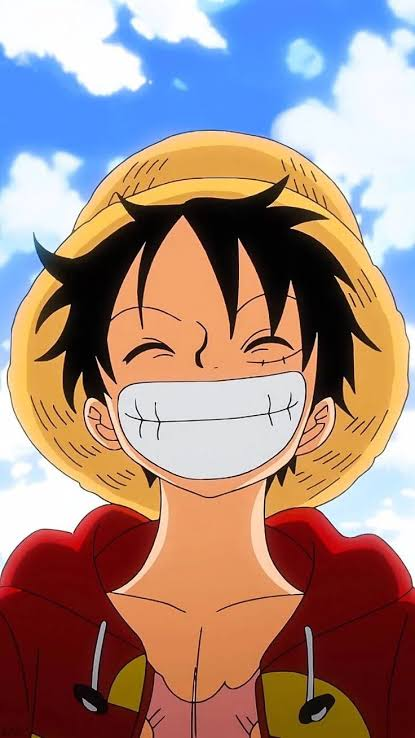

WANTED

Who is Luffy?
Luffy is the main character of One Piece, the manga by Eiichiro Oda. He grew up in Foosha Village on Dawn Island, where he met the pirate Shanks. Shanks lent him a straw hat and Luffy promised to return it once he became a great pirate.
Today he is captain of the Straw Hat Pirates. He is cheerful, hungry most of the time, and loyal to his friends. His dream is to find the legendary treasure, the One Piece, and become the Pirate King.
The Gum-Gum Fruit
As a kid, Luffy ate the Gomu Gomu no Mi, a Devil Fruit that turned his body into rubber. The price is that he can never swim.
- Stretching. His arms and legs stretch far, as in the Gum-Gum Pistol.
- Bullet-proof body. Rubber absorbs punches and bullets, though not blades.
- Gear forms. Luffy pumps his body for speed and power in Gears Second, Third, Fourth and Fifth.
His crew
Luffy never sails alone. The Straw Hat Pirates include:
- Roronoa Zoro
- Nami
- Usopp
- Sanji
- Tony Tony Chopper
- Nico Robin
- Franky
- Brook
- Jinbe
Quick facts
- Birthday
- May 5
- Home
- Foosha Village, Dawn Island
- Role
- Captain of the Straw Hat Pirates
- Devil Fruit
- Gomu Gomu no Mi
- Dream
- Become the Pirate King
- Created by
- Eiichiro Oda